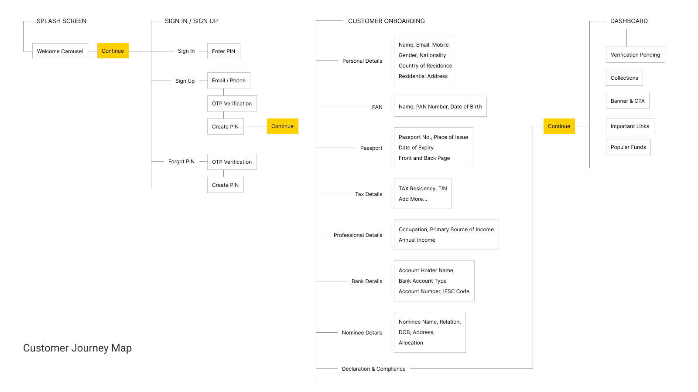
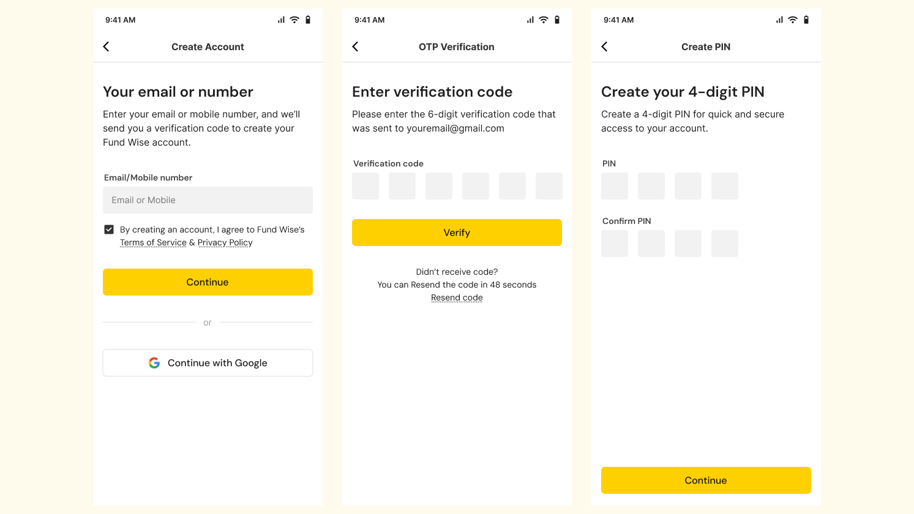
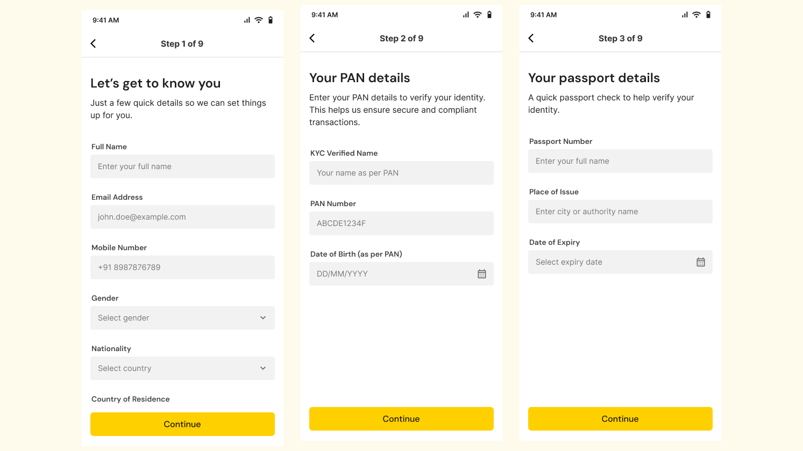
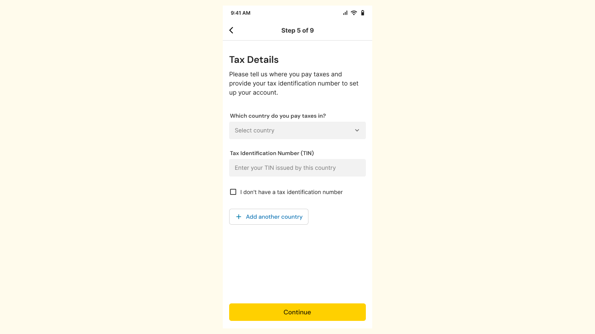
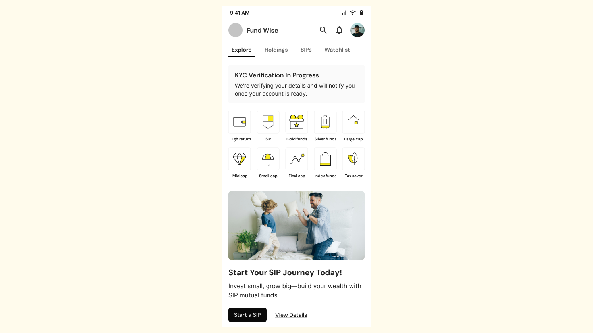

Making complexity approachable
Complex financial journeys can't always be shortened, but clear language and structure can make them easier to understand and navigate.
A mutual fund onboarding experience designed to help NRIs create an account, complete essential setup steps, and begin investing in India with greater clarity and confidence.

The client was building a mutual fund investment app, initially for the Australian market. With 20+ years of experience in finance and a team based in Australia, they had a basic idea of the onboarding journey and an early wireframe to start from.
The immediate goal was to work through the flow, define the steps, and establish the product’s visual direction — from colours, typography and spacing to the overall look and feel. The first phase focused on onboarding and the dashboard, with the broader investing experience planned for later.
Financial onboarding requires users to provide a lot of information — personal details, tax information, professional details, bank information and nominee details. Combined with multiple steps, this can make the journey feel lengthy and increase the chances of users dropping off.
There was also a risk of users getting stuck when they encountered unfamiliar questions or information they weren’t sure how to provide.
The challenge was to organise all of this into a flow that felt clear, manageable and trustworthy — without removing the information required for onboarding.
How might we make a multi-step, information-heavy financial onboarding journey feel simple and easy to complete?
The experience focuses on NRIs investing in Indian mutual funds through their Indian NRE or NRO bank account.
Direct funding from an overseas or foreign bank account is outside the scope of this product experience.
Before moving into the UI, I mapped the onboarding journey to understand how the different steps and information would fit together.
I grouped related information into logical stages and worked through the sequence of the flow — from account creation and verification to personal, tax, professional, bank and nominee details.
We also explored key product decisions along the way, such as how users would access the app after onboarding. Instead of introducing a traditional username and password, we considered a simpler PIN-based approach familiar from apps like Groww and Google Pay.
This gave us a clearer structure to design the screens around, while keeping the overall journey as simple as possible.

Users could sign up with their email or phone number, or continue with Google. OTP-based verification removed the need to create a password and kept the first step quick and familiar.

We chose a 4-digit PIN for simple everyday access, similar to patterns users already know from financial and payment apps. If users forgot their PIN or changed devices, they could re-verify through their registered email or phone and set a new PIN.
We grouped personal details KYC, and identity proof, tax residency and professional information into focused sections. Questions were written in clear, everyday language instead of technical or financial jargon.
For example, instead of asking a formal tax-residency question, we framed it around “the country where you pay taxes” and allowed users to add multiple countries when applicable. This made an otherwise complex part of the onboarding easier to understand and complete.

The remaining steps covered Indian bank details, nominee information and required compliance declarations. These were introduced as separate stages, keeping each step focused while making the overall progress visible to the user.
The goal was to make a large set of mandatory requirements feel like a series of smaller, understandable tasks.

Once onboarding is submitted, the dashboard clearly communicates that KYC verification is in progress and lets users know that it can take up to 2 working days. This gives the business time to complete the necessary checks while keeping users informed about what happens next, instead of leaving them wondering when they can start investing.
The dashboard then becomes the starting point for the investment journey. While verification is in progress, users can explore available funds and get familiar with their investment options. Once verified, they can start investing.

Keep users informed about what’s happening and what comes next.
Present complex financial information in a way that feels clear and approachable.
Reduce cognitive load by giving users a clear, focused task at each stage of the journey.
Tell users what is happening, what they can do now, and what to expect next.
The work turned an early onboarding concept into a structured experience covering account creation, verification, investor information, compliance and the first dashboard experience.
It also established a clear visual and interaction direction for the product, giving the team a foundation to build the broader investing journey in future iterations.
Financial onboarding comes with a lot of information that can't simply be removed. The more valuable design work is deciding how that information is structured, explained and presented so users can move through it with confidence.
This project reinforced for me that clarity isn't just about simplifying the interface. It's also about using hierarchy, spacing, colour and language intentionally to help users understand what they're being asked to do and what happens next.
Complex financial journeys can't always be shortened, but clear language and structure can make them easier to understand and navigate.
Spacing, typography, colour and hierarchy work together to make information easier to scan and create a consistent visual language.
The onboarding experience continues after submission, through verification, waiting states and the path to investing.